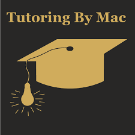

- Main Projects
- Everest Presets
- This is a modding application I wrote in Auto Hotkey (AHK) for the videogame Celeste. It allows you
to create
custom presets of mods or modpacks so that you can de/activate them all at once.

- AHK
- This is a collection of various AHK tools I've made; both things for my main projects and also some
little goofy side projects.
- Skills
- Languages (In approximate order of skill)
- Programs
- Experience
- Infusion Data Analyst - LeanTaaS
- I started working here in June 2023 as a member of their first ever cohort of summer interns, and
the opportunity then got extended into a part-time job that will be ending mid-October. I've had the
opportunity to work with proprietary software and a company codebase, along with meet dozens of
incredible people.
- Professional Tutor
- I've worked as a tutor since I was a sophomore in high school, and since coming to college I've
recieved professional training through working at the On-Campus tutoring center and am now a CRLA
Level 3 certified tutor. I'm super super passionate about educating people, and I love when I'm able
to explain something and see someone else understand it in the same way I do.
